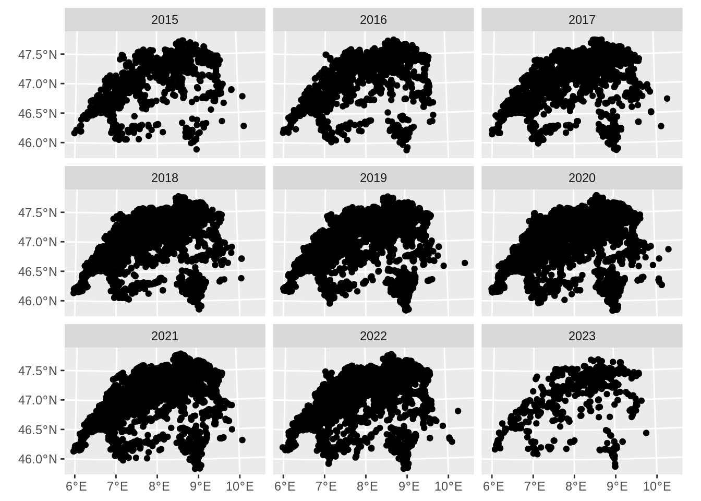

library("dplyr")
library("sf")
library("readr")
library("ggplot2")
library("plotly")
library("purrr")
library("janitor")
library("lubridate")
options("sf_max.plot" = 1)1 Prepare Ticks data
The tick data is user generated with the TickApp, see Section 1 .
tick_reports <- read_csv("data-raw/classified/tick-reports.csv")Rows: 68375 Columns: 17
── Column specification ────────────────────────────────────────────────────────
Delimiter: ","
chr (3): date, uuid, comment
dbl (14): ID, Lat., Lon., x, y, acc., date acc., body part, report type, age...
ℹ Use `spec()` to retrieve the full column specification for this data.
ℹ Specify the column types or set `show_col_types = FALSE` to quiet this message.swissboundaries_path <- "data-raw/public/swissTLM/swissBOUNDARIES3D_1_4_LV95_LN02.gdb"
# st_layers(swissboundaries_path)
switzerland <- read_sf(swissboundaries_path, "TLM_LANDESGEBIET") |>
st_zm() |>
filter(NAME != "Liechtenstein") |>
st_union() |>
st_transform(2056)
# clean column names and format columns
tick_reports <- tick_reports |>
janitor::clean_names() |>
mutate(across(c(id, x, y, acc, body_part, report_type, age, gender, host, pickup, deleted), ~ as.integer(.x))) |>
mutate(across(c(lat, lon, date_acc), ~ as.numeric(.x))) |>
mutate(
datetime = as.POSIXct(date, format = "%Y-%m-%d %H:%M:%S"),
date = as.Date(datetime)
)# remove rows without a data or data is older than 2015
tick_reports <- tick_reports |>
filter(!is.na(date)) |>
filter(date > "2015-01-01")
# remove reports outside a oversized bounding box
# This is redundant, as the data will be filtered by swissBOUNDARIES3D later
XMIN_21781 <- 485000
XMAX_21781 <- 834000
YMAX_21781 <- 296000
YMIN_21781 <- 075000
tick_reports <- tick_reports %>%
filter(x < XMAX_21781, x > XMIN_21781) %>%
filter(y < YMAX_21781, y > YMIN_21781)
# remove reports without a uuid or reports that are marked as deleted
tick_reports <- tick_reports %>%
filter(uuid != "") %>%
filter(deleted != 1)
# till now, all steps are relatively straightforward. Now, opinions start to
# matter.# remove reports with a spatial accuracy of more than 1 km radius
tick_reports <- tick_reports |>
filter(acc < 1000)
# this step is not necessary anymore, I'll keep it here to document
# default acc values. There are more default values it seems, as can be seen
# when visualizing the data as a histogram
tick_reports <- tick_reports %>%
filter(!(acc %in% c(57274L, 64434L, 1014L)))
tick_reports_sf <- st_as_sf(tick_reports, coords = c("lon", "lat"), crs = 4326)
# I dont know who came up with this, but it doesn't seem to be the case that there
# are more locations near the default locations than outside
default_locations <- data.frame(lat = c(47.3647, 46.81), lon = c(8.5534, 8.23)) |>
st_as_sf(coords = c("lon", "lat"), crs = 4326)
is_default <- st_is_within_distance(tick_reports_sf, default_locations, 1000) |>
map_lgl(\(x)length(x) > 0)
sum(is_default)[1] 23# date accuracy only has two values: 43'200 and 432'000 (0.5 and 5 days?)
# There are only 8k reports for the higher value, we can discard these
table(tick_reports$date_acc)
43200 432000
39959 8253 tick_reports <- tick_reports |>
filter(date_acc < 50000)tick_reports$date_acc <- NULL
tick_reports$body_part <- NULL
tick_reports$report_type <- NULL
tick_reports$age <- NULL
tick_reports$gender <- NULL
tick_reports$host <- NULL
tick_reports$pickup <- NULL
tick_reports$uuid <- NULL
tick_reports$comment <- NULL
tick_reports$deleted <- NULL# some reports are obivously duplicates: same x and y and date (time may vary slighly)
tick_reports |>
group_by(x, y, date) |>
filter(n() > 1) |>
select(id, datetime)Adding missing grouping variables: `x`, `y`, `date`# A tibble: 397 × 5
# Groups: x, y, date [176]
x y date id datetime
<int> <int> <date> <int> <dttm>
1 609729 261433 2015-04-13 118 2015-04-13 08:34:29
2 609729 261433 2015-04-13 119 2015-04-13 08:34:29
3 731962 253501 2015-08-26 2028 2015-08-26 20:46:02
4 731962 253501 2015-08-26 2029 2015-08-26 20:46:02
5 621424 264799 2016-07-18 5737 2016-07-18 13:52:11
6 621424 264799 2016-07-18 5738 2016-07-18 13:53:07
7 634791 249092 2016-07-25 5967 2016-07-25 08:18:49
8 634791 249092 2016-07-25 5968 2016-07-25 08:18:49
9 634791 249092 2016-07-25 5969 2016-07-25 08:18:49
10 667235 212674 2016-08-04 6233 2016-08-04 09:34:30
# ℹ 387 more rows# keep only distinct reports
tick_reports <- tick_reports |>
distinct(x, y, date, .keep_all = TRUE)
tick_reports$x <- NULL
tick_reports$y <- NULL
tick_reports_sf <- st_as_sf(tick_reports, coords = c("lon", "lat"), crs = 4326) |>
st_transform(2056)
tick_reports_sf <- cbind(tick_reports_sf, st_coordinates(tick_reports_sf))
tick_reports_sf <- tick_reports_sf[switzerland, , ]
tick_reports_sf$year <- year(tick_reports_sf$date)
ggplot(tick_reports_sf) +
geom_sf() +
facet_wrap(~year)
tick_reports_sf$year <- NULL
ticks_path <- "data-processed/Ticks"
if(!dir.exists(ticks_path)) {dir.create(ticks_path)}
st_write(tick_reports_sf, file.path(ticks_path, "tick_reports.gpkg"), "reports_0.1", overwrite = TRUE)Layer reports_0.1 in dataset data-processed/Ticks/tick_reports.gpkg already exists:
use either append=TRUE to append to layer or append=FALSE to overwrite layerError in eval(expr, envir, enclos): Dataset already exists.